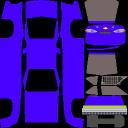

6.1 IntroductionThe LookIn this chapter you will learn the basics you need for giving your team an individual look. I'm not an artist, so I can't give you tips how you can make it look really cool. You might have guessed that from the purple look of my team, don't you? But hey, have you ever seen purple racing cars before? There are two things you can change per car, the look of the car and the pit logo. While the general look is a matter of taste you should take care of things like political correctness and legal issues of advertisements and logos. Below you can see some screenshots of cars in front of their pit.
Textures The pictures that define the look of your car are called textures. These textures are put onto your car in a process called texture mapping. Car and pit logo textures have to be stored in the SGI rgb format. The size must be a power of two, eg. for the pit logo 128x128 and for the car 256x256. Textures need to be quadratic (width equals height). You can see the default texture of the cg-nascar-rwd car on the left. To create your custom car texture you need to download a default texture and to modify it. To make your work easier there are for some cars textures available as multilayer xcf images in several resolutions. To work with the textures I recommend you to take the highest resolution available, you can reduce it later with your tool. ToolsTo work with the textures I recommend the GIMP (GNU Image Manipulation Program). It is for sure included in your Linux distribution. There is also a Windows version available. Summary
|
|
Back |
Create a pit logo. |